Chapter 3
Classification of Elements and Periodicity in Properties
Classification of Elements and Periodicity in Properties

After studying this Unit, you will be able to
“The Periodic Table is arguably the most important concept in chemistry, both in principle and in practice. It is the everyday support for students, it suggests new avenues of research to professionals, and it provides a succinct organization of the whole of chemistry. It is a remarkable demonstration of the fact that the chemical elements are not a random cluster of entities but instead display trends and lie together in families. An awareness of the Periodic Table is essential to anyone who wishes to disentangle the world and see how it is built up from the fundamental building blocks of the chemistry, the chemical elements.”
Glenn T. Seaborg
In this Unit, we will study the historical development of the Periodic Table as it stands today and the Modern Periodic Law. We will also learn how the periodic classification follows as a logical consequence of the electronic configuration of atoms. Finally, we shall examine some of the periodic trends in the physical and chemical properties of the elements.
3.1 WHY DO WE NEED TO CLASSIFY ELEMENTS ?
We know by now that the elements are the basic units of all types of matter. In 1800, only 31 elements were known. By 1865, the number of identified elements had more than doubled to 63. At present 114 elements are known. Of them, the recently discovered elements are man-made. Efforts to synthesise new elements are continuing. With such a large number of elements it is very difficult to study individually the chemistry of all these elements and their innumerable compounds individually. To ease out this problem, scientists searched for a systematic way to organise their knowledge by classifying the elements. Not only that it would rationalize known chemical facts about elements, but even predict new ones for undertaking further study.
3.2 GENESIS OF PERIODIC CLASSIFICATION
Classification of elements into groups and development of Periodic Law and Periodic Table are the consequences of systematising the knowledge gained by a number of scientists through their observations and experiments. The German chemist, Johann Dobereiner in early 1800’s was the first to consider the idea of trends among properties of elements. By 1829 he noted a similarity among the physical and chemical properties of several groups of three elements (Triads). In each case, he noticed that the middle element of each of the Triads had an atomic weight about half way between the atomic weights of the other two (Table 3.1). Also the properties of the middle element were in between those of the other two members. Since Dobereiner’s relationship, referred to as the Law of Triads, seemed to work only for a few elements, it was dismissed as coincidence.
Table 3.1 Dobereiner’s Triads
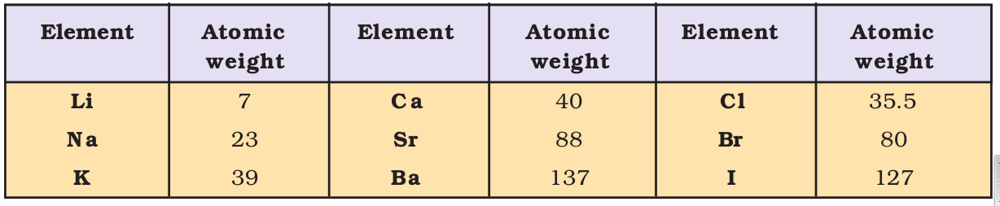
The next reported attempt to classify elements was made by a French geologist, A.E.B. de Chancourtois in 1862. He arranged the then known elements in order of increasing atomic weights and made a cylindrical table of elements to display the periodic recurrence of properties. This also did not attract much attention. The English chemist, John Alexander Newlands in 1865 profounded the Law of Octaves. He arranged the elements in increasing order of their atomic weights and noted that every eighth element had properties similar to the first element (Table 3.2). The relationship was just like every eighth note that resembles the first in octaves of music. Newlands’s Law of Octaves seemed to be true only for elements up to calcium. Although his idea was not widely accepted at that time, he, for his work, was later awarded Davy Medal in 1887 by the Royal Society, London.
Table 3.2 Newlands’ Octaves
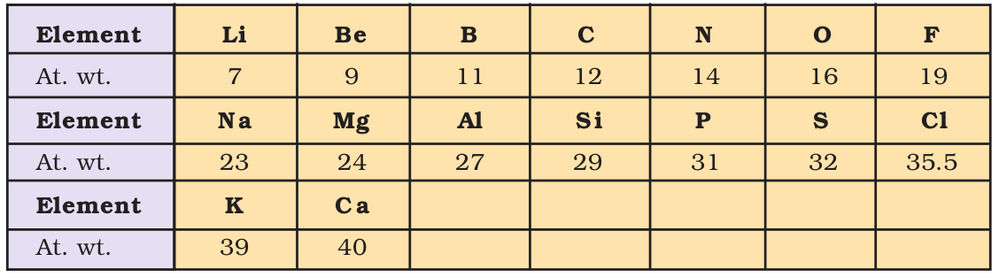
The Periodic Law, as we know it today owes its development to the Russian chemist, Dmitri Mendeleev (1834-1907) and the German chemist, Lothar Meyer (1830-1895). Working independently, both the chemists in 1869 proposed that on arranging elements in the increasing order of their atomic weights, similarities appear in physical and chemical properties at regular intervals. Lothar Meyer plotted the physical properties such as atomic volume, melting point and boiling point against atomic weight and obtained a periodically repeated pattern. Unlike Newlands, Lothar Meyer observed a change in length of that repeating pattern. By 1868, Lothar Meyer had developed a table of the elements that closely resembles the Modern Periodic Table. However, his work was not published until after the work of Dmitri Mendeleev, the scientist who is generally credited with the development of the Modern Periodic Table.
While Dobereiner initiated the study of periodic relationship, it was Mendeleev who was responsible for publishing the Periodic Law for the first time. It states as follows :
The properties of the elements are a periodic function of their atomic weights.
Mendeleev arranged elements in horizontal rows and vertical columns of a table in order of their increasing atomic weights in such a way that the elements with similar properties occupied the same vertical column or group. Mendeleev’s system of classifying elements was more elaborate than that of Lothar Meyer’s. He fully recognized the significance of periodicity and used broader range of physical and chemical properties to classify the elements. In particular, Mendeleev relied on the similarities in the empirical formulas and properties of the compounds formed by the elements. He realized that some of the elements did not fit in with his scheme of classification if the order of atomic weight was strictly followed. He ignored the order of atomic weights, thinking that the atomic measurements might be incorrect, and placed the elements with similar properties together. For example, iodine with lower atomic weight than that of tellurium (Group VI) was placed in Group VII along with fluorine, chlorine, bromine because of similarities in properties (Fig. 3.1). At the same time, keeping his primary aim of arranging the elements of similar properties in the same group, he proposed that some of the elements were still undiscovered and, therefore, left several gaps in the table. For example, both gallium and germanium were unknown at the time Mendeleev published his Periodic Table. He left the gap under aluminium and a gap under silicon, and called these elements Eka-Aluminium and Eka-Silicon. Mendeleev predicted not only the existence of gallium and germanium, but also described some of their general physical properties. These elements were discovered later. Some of the properties predicted by Mendeleev for these elements and those found experimentally are listed in Table 3.3.
Table 3.3 Mendeleev’s Predictions for the Elements Eka-aluminium (Gallium) and Eka-silicon (Germanium)
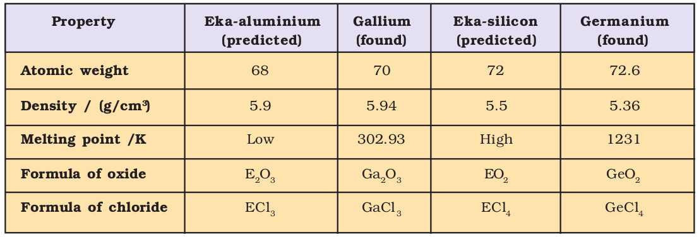
The boldness of Mendeleev’s quantitative predictions and their eventual success made him and his Periodic Table famous. Mendeleev’s Periodic Table published in 1905 is shown in Fig. 3.1.
PERIODIC SYSTEM OF THE ELEMENTS IN GROUPS AND SERIES
Fig. 3.1 Mendeleev’s Periodic Table published earlier
Dmitri Mendeleev was born in Tobalsk, Siberia in Russia. After his father’s death, the family moved to St. Petersburg. He received his Master’s degree in Chemistry in 1856 and the doctoral degree in 1865. He taught at the University of St.Petersburg where he was appointed Professor of General Chemistry in 1867.
Dmitri Ivanovich Mendeleev
(1834-1907)
Preliminary work for his great textbook “Principles of Chemistry” led Mendeleev to propose the Periodic Law and to construct his Periodic Table of elements. At that time, the structure of atom was unknown and Mendeleev’s idea to consider that the properties of the elements were in someway related to their atomic masses was a very imaginative one. To place certain elements into the correct group from the point of view of their chemical properties, Mendeleev reversed the order of some pairs of elements and asserted that their atomic masses were incorrect. Mendeleev also had the foresight to leave gaps in the Periodic Table for elements unknown at that time and predict their properties from the trends that he observed among the properties of related elements. Mendeleev’s predictions were proved to be astonishingly correct when these elements were discovered later.
Mendeleev’s Periodic Law spurred several areas of research during the subsequent decades. The discovery of the first two noble gases helium and argon in 1890 suggested the possibility that there must be other similar elements to fill an entire family. This idea led Ramsay to his successful search for krypton and xenon. Work on the radioactive decay series for uranium and thorium in the early years of twentieth century was also guided by the Periodic Table.
Mendeleev was a versatile genius. He worked on many problems connected with Russia’s natural resources. He invented an accurate barometer. In 1890, he resigned from the Professorship. He was appointed as the Director of the Bureau of Weights and Measures. He continued to carry out important research work in many areas until his death in 1907.
You will notice from the modern Period Table (Fig. 3.2) that Mendeleev’s name has been immortalized by naming the element with atomic number 101, as Mendelevium. This name was proposed by American scientist Glenn T. Seaborg, the discoverer of this element, “in recognition of the pioneering role of the great Russian Chemist who was the first to use the periodic system of elements to predict the chemical properties of undiscovered elements, a principle which has been the key to the discovery of nearly all the transuranium elements”.
3.3 MODERN PERIODIC LAW AND THE PRESENT FORM OF THE PERIODIC TABLE
We must bear in mind that when Mendeleev developed his Periodic Table, chemists knew nothing about the internal structure of atom. However, the beginning of the 20th century witnessed profound developments in theories about sub-atomic particles. In 1913, the English physicist, Henry Moseley observed regularities in the characteristic X-ray spectra of the elements. A plot of  (where
(where  is frequency of X-rays emitted) against atomic number (Z ) gave a straight line and not the plot of
is frequency of X-rays emitted) against atomic number (Z ) gave a straight line and not the plot of  vs atomic mass. He thereby showed that the atomic number is a more fundamental property of an element than its atomic mass. Mendeleev’s Periodic Law was, therefore, accordingly modified. This is known as the Modern Periodic Law and can be stated as :
vs atomic mass. He thereby showed that the atomic number is a more fundamental property of an element than its atomic mass. Mendeleev’s Periodic Law was, therefore, accordingly modified. This is known as the Modern Periodic Law and can be stated as :
The physical and chemical properties of the elements are periodic functions of their atomic numbers.
The Periodic Law revealed important analogies among the 94 naturally occurring elements (neptunium and plutonium like actinium and protoactinium are also found in pitch blende – an ore of uranium). It stimulated renewed interest in Inorganic Chemistry and has carried into the present with the creation of artificially produced short-lived elements.
You may recall that the atomic number is equal to the nuclear charge (i.e., number of protons) or the number of electrons in a neutral atom. It is then easy to visualize the significance of quantum numbers and electronic configurations in periodicity of elements. In fact, it is now recognized that the Periodic Law is essentially the consequence of the periodic variation in electronic configurations, which indeed determine the physical and chemical properties of elements and their compounds.
Numerous forms of Periodic Table have been devised from time to time. Some forms emphasise chemical reactions and valence, whereas others stress the electronic configuration of elements. A modern version, the so-called “long form” of the Periodic Table of the elements (Fig. 3.2), is the most convenient and widely used. The horizontal rows (which Mendeleev called series) are called periods and the vertical columns, groups. Elements having similar outer electronic configurations in their atoms are arranged in vertical columns, referred to as groups or families. According to the recommendation of International Union of Pure and Applied Chemistry (IUPAC), the groups are numbered from 1 to 18 replacing the older notation of groups IA … VIIA, VIII, IB … VIIB and 0.
There are altogether seven periods. The period number corresponds to the highest principal quantum number (n) of the elements in the period. The first period contains 2 elements. The subsequent periods consists of 8, 8, 18, 18 and 32 elements, respectively. The seventh period is incomplete and like the sixth period would have a theoretical maximum (on the basis of quantum numbers) of 32 elements. In this form of the Periodic Table, 14 elements of both sixth and seventh periods (lanthanoids and actinoids, respectively) are placed in separate panels at the bottom*.
* Glenn T. Seaborg’s work in the middle of the 20th century starting with the discovery of plutonium in 1940, followed by those of all the transuranium elements from 94 to 102 led to reconfiguration of the periodic table placing the actinoids below the lanthanoids. In 1951, Seaborg was awarded the Nobel Prize in chemistry for his work. Element 106 has been named Seaborgium (Sg) in his honour.
3.4 NOMENCLATURE OF ELEMENTS WITH ATOMIC NUMBERS > 100
The naming of the new elements had been traditionally the privilege of the discoverer (or discoverers) and the suggested name was ratified by the IUPAC. In recent years this has led to some controversy. The new elements with very high atomic numbers are so unstable that only minute quantities, sometimes only a few atoms of them are obtained. Their synthesis and characterisation, therefore, require highly sophisticated costly equipment and laboratory. Such work is carried out with competitive spirit only in some laboratories in the world. Scientists, before collecting the reliable data on the new element, at times get tempted to claim for its discovery. For example, both American and Soviet scientists claimed credit for discovering element 104. The Americans named it Rutherfordium whereas Soviets named it Kurchatovium. To avoid such problems, the IUPAC has made recommendation that until a new element’s discovery is proved, and its name is officially recognized,,,,,,, a systematic nomenclature be derived directly from the atomic number of the element using the numerical roots for 0 and numbers 1-9.
Fig. 3.2 Long form of the Periodic Table of the Elements with their atomic numbers and ground state outer electronic configurations. The groups are numbered 1-18 in accordance with the 1984 IUPAC recommendations. This notation replaces the old numbering scheme of IA–VIIA, VIII, IB–VIIB and 0 for the elements.
These are shown in Table 3.4. The roots are put together in order of digits which make up the atomic number and “ium” is added at the end. The IUPAC names for elements with Z above 100 are shown in Table 3.5.
Table 3.4 Notation for IUPAC Nomenclature of Elements
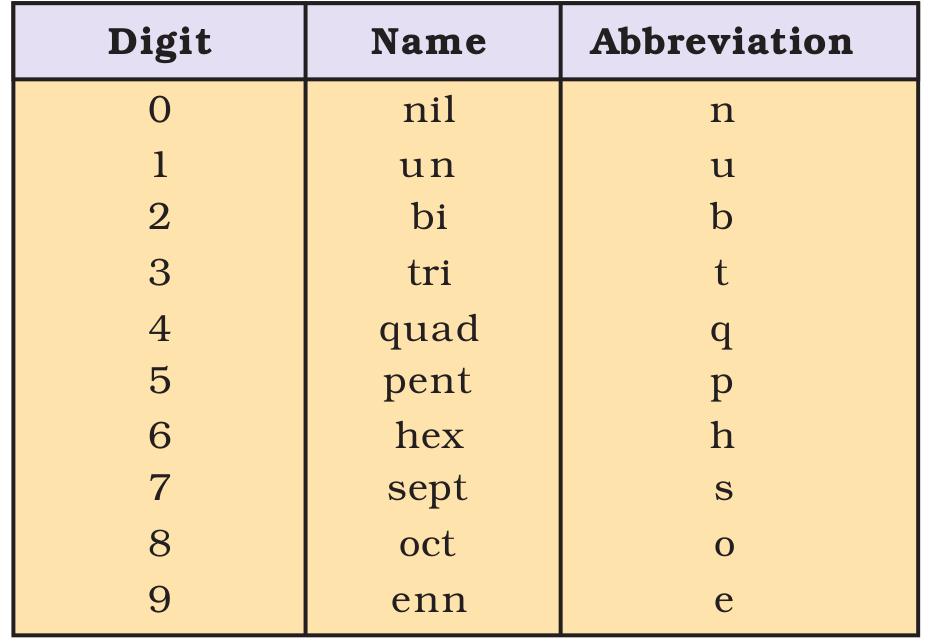
Table 3.5 Nomenclature of Elements with Atomic Number Above 100
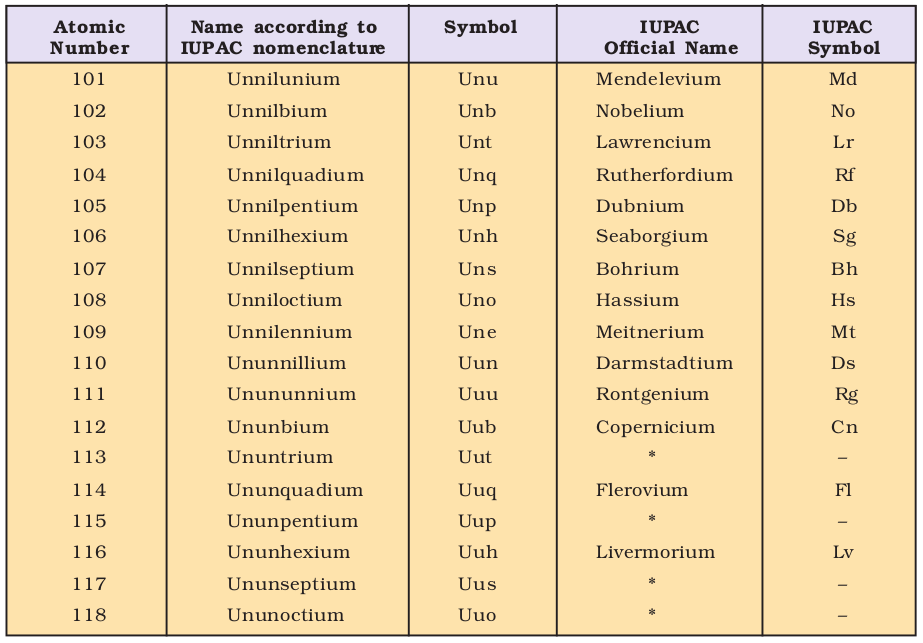
* Official IUPAC name yet to be announced
Thus, the new element first gets a temporary name, with symbol consisting of three letters. Later permanent name and symbol are given by a vote of IUPAC representatives from each country. The permanent name might reflect the country (or state of the country) in which the element was discovered, or pay tribute to a notable scientist. As of now, elements with atomic numbers up to 118 have been discovered. Official names of elements with atomic numbers 113, 115, 117 and 118 are yet to be announced by IUPAC.
Problem 3.1
What would be the IUPAC name and symbol for the element with atomic number 120?
Solution
From Table 3.4, the roots for 1, 2 and 0 are un, bi and nil, respectively. Hence, the symbol and the name respectively are Ubn and unbinilium.
3.5 ELECTRONIC CONFIGURATIONS OF ELEMENTS AND THE PERIODIC TABLE
In the preceding unit we have learnt that an electron in an atom is characterised by a set of four quantum numbers, and the principal quantum number (n ) defines the main energy level known as shell. We have also studied about the filling of electrons into different subshells, also referred to as orbitals (s, p, d, f) in an atom. The distribution of electrons into orbitals of an atom is called its electronic configuration. An element’s location in the Periodic Table reflects the quantum numbers of the last orbital filled. In this section we will observe a direct connection between the electronic configurations of the elements and the long form of the Periodic Table.
(a) Electronic Configurations in Periods
The period indicates the value of n for the outermost or valence shell. In other words, successive period in the Periodic Table is associated with the filling of the next higher principal energy level (n = 1, n = 2, etc.). It can be readily seen that the number of elements in each period is twice the number of atomic orbitals available in the energy level that is being filled. The first period (n = 1) starts with the filling of the lowest level (1s) and therefore has two elements — hydrogen (ls1) and helium (ls2) when the first shell (K) is completed. The second period (n = 2) starts with lithium and the third electron enters the 2s orbital. The next element, beryllium has four electrons and has the electronic configuration 1s22s2. Starting from the next element boron, the 2p orbitals are filled with electrons when the L shell is completed at neon (2s22p6). Thus there are 8 elements in the second period. The third period (n = 3) begins at sodium, and the added electron enters a 3s orbital. Successive filling of 3s and 3p orbitals gives rise to the third period of 8 elements from sodium to argon. The fourth period (n = 4) starts at potassium, and the added electrons fill up the 4s orbital. Now you may note that before the 4p orbital is filled, filling up of 3d orbitals becomes energetically favourable and we come across the so called 3d transition series of elements. This starts from scandium (Z = 21) which has the electronic configuration 3d14s2. The 3d orbitals are filled at zinc (Z=30) with electronic configuration 3d104s2 . The fourth period ends at krypton with the filling up of the 4p orbitals. Altogether we have 18 elements in this fourth period. The fifth period (n = 5) beginning with rubidium is similar to the fourth period and contains the 4d transition series starting at yttrium (Z = 39). This period ends at xenon with the filling up of the 5p orbitals. The sixth period (n = 6) contains 32 elements and successive electrons enter 6s, 4f, 5d and 6p orbitals, in the order — filling up of the 4f orbitals begins with cerium (Z = 58) and ends at lutetium (Z = 71) to give the 4f-inner transition series which is called the lanthanoid series. The seventh period (n = 7) is similar to the sixth period with the successive filling up of the 7s, 5f, 6d and 7p orbitals and includes most of the man-made radioactive elements. This period will end at the element with atomic number 118 which would belong to the noble gas family. Filling up of the 5f orbitals after actinium (Z = 89) gives the 5f-inner transition series known as the actinoid series. The 4f- and 5f-inner transition series of elements are placed separately in the Periodic Table to maintain its structure and to preserve the principle of classification by keeping elements with similar properties in a single column.
Problem 3.2
How would you justify the presence of 18 elements in the 5th period of the Periodic Table?
Solution
When n = 5, l = 0, 1, 2, 3. The order in which the energy of the available orbitals 4d, 5s and 5p increases is 5s < 4d < 5p. The total number of orbitals available are 9. The maximum number of electrons that can be accommodated is 18; and therefore 18 elements are there in the 5th period.
(b) Groupwise Electronic Configurations
Elements in the same vertical column or group have similar valence shell electronic configurations, the same number of electrons in the outer orbitals, and similar properties. For example, the Group 1 elements (alkali metals) all have ns1 valence shell electronic configuration as shown below.

Thus it can be seen that the properties of an element have periodic dependence upon its atomic number and not on relative atomic mass.
3.6 ELECTRONIC CONFIGURATIONS AND TYPES OF ELEMENTS: s-, p-, d-, f- BLOCKS
The aufbau (build up) principle and the electronic configuration of atoms provide a theoretical foundation for the periodic classification. The elements in a vertical column of the Periodic Table constitute a group or family and exhibit similar chemical behaviour. This similarity arises because these elements have the same number and same distribution of electrons in their outermost orbitals. We can classify the elements into four blocks viz., s-block, p-block, d-block and f-block depending on the type of atomic orbitals that are being filled with electrons. This is illustrated in Fig. 3.3. We notice two exceptions to this categorisation. Strictly, helium belongs to the s-block but its positioning in the p-block along with other group 18 elements is justified because it has a completely filled valence shell (1s2) and as a result, exhibits properties characteristic of other noble gases. The other exception is hydrogen. It has only one s-electron and hence can be placed in group 1 (alkali metals). It can also gain an electron to achieve a noble gas arrangement and hence it can behave similar to a group 17 (halogen family) elements. Because it is a special case, we shall place hydrogen separately at the top of the Periodic Table as shown in Fig. 3.2 and Fig. 3.3. We will briefly discuss the salient features of the four types of elements marked in the Periodic Table. More about these elements will be discussed later. During the description of their features certain terminology has been used which has been classified in section 3.7.
3.6.1 The s-Block Elements
The elements of Group 1 (alkali metals) and Group 2 (alkaline earth metals) which have ns1 and ns2 outermost electronic configuration belong to the s-Block Elements. They are all reactive metals with low ionization enthalpies. They lose the outermost electron(s) readily to form 1+ ion (in the case of alkali metals) or 2+ ion (in the case of alkaline earth metals). The metallic character and the reactivity increase as we go down the group. Because of high reactivity they are never found pure in nature. The compounds of the s-block elements, with the exception of those of lithium and beryllium are predominantly ionic.

3.6.2 The p-Block Elements
The p-Block Elements comprise those belonging to Group 13 to 18 and these together with the s-Block Elements are called the Representative Elements or Main Group Elements. The outermost electronic configuration varies from ns2np1 to ns2np6 in each period. At the end of each period is a noble gas element with a closed valence shell ns2np6 configuration. All the orbitals in the valence shell of the noble gases are completely filled by electrons and it is very difficult to alter this stable arrangement by the addition or removal of electrons. The noble gases thus exhibit very low chemical reactivity. Preceding the noble gas family are two chemically important groups of non-metals. They are the halogens (Group 17) and the chalcogens (Group 16). These two groups of elements have highly negative electron gain enthalpies and readily add one or two electrons respectively to attain the stable noble gas configuration. The non-metallic character increases as we move from left to right across a period and metallic character increases as we go down the group.
3.6.3 The d-Block Elements (Transition Elements)
These are the elements of Group 3 to 12 in the centre of the Periodic Table. These are characterised by the filling of inner d orbitals by electrons and are therefore referred to as d-Block Elements. These elements have the general outer electronic configuration (n-1)d1-10ns0-2 . They are all metals. They mostly form coloured ions, exhibit variable valence (oxidation states), paramagnetism and oftenly used as catalysts. However, Zn, Cd and Hg which have the electronic configuration, (n-1) d10ns2 do not show most of the properties of transition elements. In a way, transition metals form a bridge between the chemically active metals of s-block elements and the less active elements of Groups 13 and 14 and thus take their familiar name “Transition Elements”.
3.6.4 The f-Block Elements (Inner-Transition Elements)
The two rows of elements at the bottom of the Periodic Table, called the Lanthanoids, Ce(Z = 58) – Lu(Z = 71) and Actinoids, Th(Z = 90) – Lr (Z = 103) are characterised by the outer electronic configuration (n-2)f1-14 (n-1)d0–1ns2. The last electron added to each element is filled in f- orbital. These two series of elements are hence called the Inner-Transition Elements (f-Block Elements). They are all metals. Within each series, the properties of the elements are quite similar. The chemistry of the early actinoids is more complicated than the corresponding lanthanoids, due to the large number of oxidation states possible for these actinoid elements. Actinoid elements are radioactive. Many of the actinoid elements have been made only in nanogram quantities or even less by nuclear reactions and their chemistry is not fully studied. The elements after uranium are called Transuranium Elements.
Problem 3.3
The elements Z = 117 and 120 have not yet been discovered. In which family / group would you place these elements and also give the electronic configuration in each case.
Solution
We see from Fig. 3.2, that element with Z = 117, would belong to the halogen family (Group 17) and the electronic configuration would be [Rn] 5f146d107s27p5. The element with Z = 120, will be placed in Group 2 (alkaline earth metals), and will have the electronic configuration [Uuo]8s2.
3.6.5 Metals, Non-metals and Metalloids
In addition to displaying the classification of elements into s-, p-, d-, and f-blocks, Fig. 3.3 shows another broad classification of elements based on their properties. The elements can be divided into Metals and Non-Metals. Metals comprise more than 78% of all known elements and appear on the left side of the Periodic Table. Metals are usually solids at room temperature [mercury is an exception; gallium and caesium also have very low melting points (303K and 302K, respectively)]. Metals usually have high melting and boiling points. They are good conductors of heat and electricity. They are malleable (can be flattened into thin sheets by hammering) and ductile (can be drawn into wires). In contrast, non-metals are located at the top right hand side of the Periodic Table. In fact, in a horizontal row, the property of elements change from metallic on the left to non-metallic on the right. Non-metals are usually solids or gases at room temperature with low melting and boiling points (boron and carbon are exceptions). They are poor conductors of heat and electricity. Most non-metallic solids are brittle and are neither malleable nor ductile. The elements become more metallic as we go down a group; the non-metallic character increases as one goes from left to right across the Periodic Table. The change from metallic to non-metallic character is not abrupt as shown by the thick zig-zag line in Fig. 3.3. The elements (e.g., silicon, germanium, arsenic, antimony and tellurium) bordering this line and running diagonally across the Periodic Table show properties that are characteristic of both metals and non-metals. These elements are called Semi-metals or Metalloids.
Problem 3.4
Considering the atomic number and position in the periodic table, arrange the following elements in the increasing order of metallic character : Si, Be, Mg, Na, P.
Solution
Metallic character increases down a group and decreases along a period as we move from left to right. Hence the order of increasing metallic character is: P < Si < Be < Mg < Na.
3.7 PERIODIC TRENDS IN PROPERTIES OF ELEMENTS
There are many observable patterns in the physical and chemical properties of elements as we descend in a group or move across a period in the Periodic Table. For example, within a period, chemical reactivity tends to be high in Group 1 metals, lower in elements towards the middle of the table, and increases to a maximum in the Group 17 non-metals. Likewise within a group of representative metals (say alkali metals) reactivity increases on moving down the group, whereas within a group of non-metals (say halogens), reactivity decreases down the group. But why do the properties of elements follow these trends? And how can we explain periodicity? To answer these questions, we must look into the theories of atomic structure and properties of the atom. In this section we shall discuss the periodic trends in certain physical and chemical properties and try to explain them in terms of number of electrons and energy levels.
3.7.1 Trends in Physical Properties
There are numerous physical properties of elements such as melting and boiling points, heats of fusion and vaporization, energy of atomization, etc. which show periodic variations. However, we shall discuss the periodic trends with respect to atomic and ionic radii, ionization enthalpy, electron gain enthalpy and electronegativity.
(a) Atomic Radius
You can very well imagine that finding the size of an atom is a lot more complicated than measuring the radius of a ball. Do you know why? Firstly, because the size of an atom (~ 1.2 Å i.e., 1.2 × 10–10 m in radius) is very small. Secondly, since the electron cloud surrounding the atom does not have a sharp boundary, the determination of the atomic size cannot be precise. In other words, there is no practical way by which the size of an individual atom can be measured. However, an estimate of the atomic size can be made by knowing the distance between the atoms in the combined state. One practical approach to estimate the size of an atom of a non-metallic element is to measure the distance between two atoms when they are bound together by a single bond in a covalent molecule and from this value, the “Covalent Radius” of the element can be calculated. For example, the bond distance in the chlorine molecule (Cl2) is 198 pm and half this distance (99 pm), is taken as the atomic radius of chlorine. For metals, we define the term “Metallic Radius” which is taken as half the internuclear distance separating the metal cores in the metallic crystal. For example, the distance between two adjacent copper atoms in solid copper is 256 pm; hence the metallic radius of copper is assigned a value of 128 pm. For simplicity, in this book, we use the term Atomic Radius to refer to both covalent or metallic radius depending on whether the element is a non-metal or a metal. Atomic radii can be measured by X-ray or other spectroscopic methods.
Table 3.6(a) Atomic Radii/pm Across the Periods
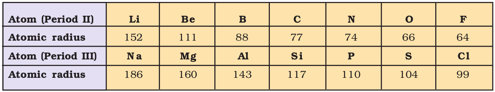
The atomic radii of a few elements are listed in Table 3.6 . Two trends are obvious. We can explain these trends in terms of nuclear charge and energy level. The atomic size generally decreases across a period as illustrated in Fig. 3.4(a) for the elements of the second period. It is because within the period the outer electrons are in the same valence shell and the effective nuclear charge increases as the atomic number increases resulting in the increased attraction of electrons to the nucleus. Within a family or vertical column of the periodic table, the atomic radius increases regularly with atomic number as illustrated in Fig. 3.4(b). For alkali metals and halogens, as we descend the groups, the principal quantum number (n) increases and the valence electrons are farther from the nucleus. This happens because the inner energy levels are filled with electrons, which serve to shield the outer electrons from the pull of the nucleus. Consequently the size of the atom increases as reflected in the atomic radii.
Table 3.6 (b) Atomic Radii/pm Down a Family
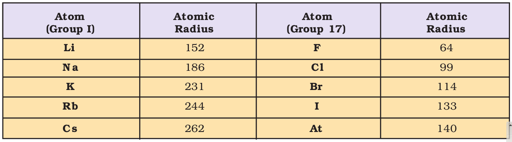
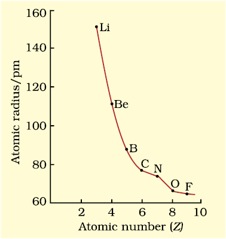
Fig. 3.4 (a) Variation of atomic radius with atomic number across the second period
Note that the atomic radii of noble gases are not considered here. Being monoatomic, their (non-bonded radii) values are very large. In fact radii of noble gases should be compared not with the covalent radii but with the van der Waals radii of other elements.
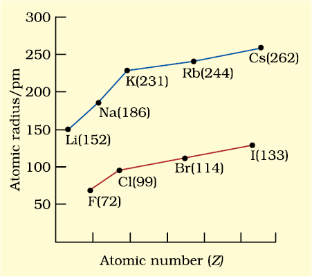
Fig. 3.4 (b) Variation of atomic radius with atomic number for alkali metals and halogens
(b) Ionic Radius
The removal of an electron from an atom results in the formation of a cation, whereas gain of an electron leads to an anion. The ionic radii can be estimated by measuring the distances between cations and anions in ionic crystals. In general, the ionic radii of elements exhibit the same trend as the atomic radii. A cation is smaller than its parent atom because it has fewer electrons while its nuclear charge remains the same. The size of an anion will be larger than that of the parent atom because the addition of one or more electrons would result in increased repulsion among the electrons and a decrease in effective nuclear charge. For example, the ionic radius of fluoride ion (F– ) is 136 pm whereas the atomic radius of fluorine is only 64 pm. On the other hand, the atomic radius of sodium is 186 pm compared to the ionic radius of 95 pm for Na+.
When we find some atoms and ions which contain the same number of electrons, we call them isoelectronic species*. For example, O2–, F–, Na+ and Mg2+ have the same number of electrons (10). Their radii would be different because of their different nuclear charges. The cation with the greater positive charge will have a smaller radius because of the greater attraction of the electrons to the nucleus. Anion with the greater negative charge will have the larger radius. In this case, the net repulsion of the electrons will outweigh the nuclear charge and the ion will expand in size.
Problem 3.5
Which of the following species will have the largest and the smallest size?
Mg, Mg2+, Al, Al3+.
Solution
Atomic radii decrease across a period. Cations are smaller than their parent atoms. Among isoelectronic species, the one with the larger positive nuclear charge will have a smaller radius.
Hence the largest species is Mg; the smallest one is Al3+.
* Two or more species with same number of atoms, same number of valence electrons and same structure, regardless of the nature of elements involved.
A quantitative measure of the tendency of an element to lose electron is given by its Ionization Enthalpy. It represents the energy required to remove an electron from an isolated gaseous atom (X) in its ground state. In other words, the first ionization enthalpy for an element X is the enthalpy change (∆i H) for the reaction depicted in equation 3.1.
X(g) → X+(g) + e– (3.1)
The ionization enthalpy is expressed in units of kJ mol–1. We can define the second ionization enthalpy as the energy required to remove the second most loosely bound electron; it is the energy required to carry out the reaction shown in equation 3.2.
X+(g) → X2+(g) + e– (3.2)
Energy is always required to remove electrons from an atom and hence ionization enthalpies are always positive. The second ionization enthalpy will be higher than the first ionization enthalpy because it is more difficult to remove an electron from a positively charged ion than from a neutral atom. In the same way the third ionization enthalpy will be higher than the second and so on. The term “ionization enthalpy”, if not qualified, is taken as the first ionization enthalpy.
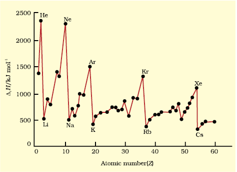
Fig. 3.5 Variation of first ionization enthalpies (∆iH) with atomic number for elements with Z = 1 to 60

Fig. 3.6(a) First ionization enthalpies (∆iH) of elements of the second period as a
function of atomic number (Z) and Fig. 3.6(b) ∆iH of alkali metals as a function of Z.
The first ionization enthalpies of elements having atomic numbers up to 60 are plotted in Fig. 3.5. The periodicity of the graph is quite striking. You will find maxima at the noble gases which have closed electron shells and very stable electron configurations. On the other hand, minima occur at the alkali metals and their low ionization enthalpies can be correlated with their high reactivity. In addition, you will notice two trends the first ionization enthalpy generally increases as we go across a period and decreases as we descend in a group. These trends are illustrated in Figs. 3.6(a) and 3.6(b) respectively for the elements of the second period and the first group of the periodic table. You will appreciate that the ionization enthalpy and atomic radius are closely related properties. To understand these trends, we have to consider two factors : (i) the attraction of electrons towards the nucleus, and (ii) the repulsion of electrons from each other. The effective nuclear charge experienced by a valence electron in an atom will be less than the actual charge on the nucleus because of “shielding” or “screening” of the valence electron from the nucleus by the intervening core electrons. For example, the 2s electron in lithium is shielded from the nucleus by the inner core of 1s electrons. As a result, the valence electron experiences a net positive charge which is less than the actual charge of +3. In general, shielding is effective when the orbitals in the inner shells are completely filled. This situation occurs in the case of alkali metals which have single outermost ns-electron preceded by a noble gas electronic configuration.
When we move from lithium to fluorine across the second period, successive electrons are added to orbitals in the same principal quantum level and the shielding of the nuclear charge by the inner core of electrons does not increase very much to compensate for the increased attraction of the electron to the nucleus. Thus, across a period, increasing nuclear charge outweighs the shielding. Consequently, the outermost electrons are held more and more tightly and the ionization enthalpy increases across a period. As we go down a group, the outermost electron being increasingly farther from the nucleus, there is an increased shielding of the nuclear charge by the electrons in the inner levels. In this case, increase in shielding outweighs the increasing nuclear charge and the removal of the outermost electron requires less energy down a group.
From Fig. 3.6(a), you will also notice that the first ionization enthalpy of boron (Z = 5) is slightly less than that of beryllium (Z = 4) even though the former has a greater nuclear charge. When we consider the same principal quantum level, an s-electron is attracted to the nucleus more than a p-electron. In beryllium, the electron removed during the ionization is an s-electron whereas the electron removed during ionization of boron is a p-electron. The penetration of a 2s-electron to the nucleus is more than that of a 2p-electron; hence the 2p electron of boron is more shielded from the nucleus by the inner core of electrons than the 2s electrons of beryllium. Therefore, it is easier to remove the 2p-electron from boron compared to the removal of a 2s- electron from beryllium. Thus, boron has a smaller first ionization enthalpy than beryllium. Another “anomaly” is the smaller first ionization enthalpy of oxygen compared to nitrogen. This arises because in the nitrogen atom, three 2p-electrons reside in different atomic orbitals (Hund’s rule) whereas in the oxygen atom, two of the four 2p-electrons must occupy the same 2p-orbital resulting in an increased electron-electron repulsion. Consequently, it is easier to remove the fourth 2p-electron from oxygen than it is, to remove one of the three 2p-electrons from nitrogen.
Problem 3.6
The first ionization enthalpy (∆i H ) values of the third period elements, Na, Mg and Si are respectively 496, 737 and 786 kJ mol–1. Predict whether the first ∆i H value for Al will be more close to 575 or 760 kJmol–1 ? Justify your answer.
Solution
It will be more close to 575 kJ mol–1. The value for Al should be lower than that of Mg because of effective shielding of 3p electrons from the nucleus by 3s-electrons.
(d) Electron Gain Enthalpy
When an electron is added to a neutral gaseous atom (X) to convert it into a negative ion, the enthalpy change accompanying the process is defined as the Electron Gain Enthalpy (∆egH). Electron gain enthalpy provides a measure of the ease with which an atom adds an electron to form anion as represented by equation 3.3.
X(g) + e– → X–(g) (3.3)
Table 3.7 Electron Gain Enthalpies* / (kJ mol–1) of Some Main Group Elements
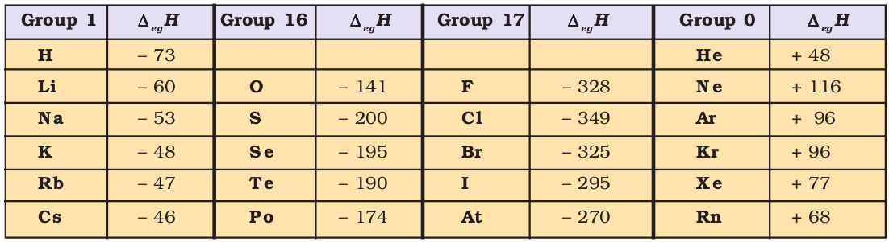
Depending on the element, the process of adding an electron to the atom can be either endothermic or exothermic. For many elements energy is released when an electron is added to the atom and the electron gain enthalpy is negative. For example, group 17 elements (the halogens) have very high negative electron gain enthalpies because they can attain stable noble gas electronic configurations by picking up an electron. On the other hand, noble gases have large positive electron gain enthalpies because the electron has to enter the next higher principal quantum level leading to a very unstable electronic configuration. It may be noted that electron gain enthalpies have large negative values toward the upper right of the periodic table preceding the noble gases.
The variation in electron gain enthalpies of elements is less systematic than for ionization enthalpies. As a general rule, electron gain enthalpy becomes more negative with increase in the atomic number across a period. The effective nuclear charge increases from left to right across a period and consequently it will be easier to add an electron to a smaller atom since the added electron on an average would be closer to the positively charged nucleus. We should also expect electron gain enthalpy to become less negative as we go down a group because the size of the atom increases and the added electron would be farther from the nucleus. This is generally the case (Table 3.7). However, electron gain enthalpy of O or F is less negative than that of the succeeding element. This is because when an electron is added to O or F, the added electron goes to the smaller n = 2 quantum level and suffers significant repulsion from the other electrons present in this level. For the n = 3 quantum level (S or Cl), the added electron occupies a larger region of space and the electron-electron repulsion is much less.
Problem 3.7
Which of the following will have the most negative electron gain enthalpy and which the least negative?
P, S, Cl, F.
Explain your answer.
Solution
Electron gain enthalpy generally becomes more negative across a period as we move from left to right. Within a group, electron gain enthalpy becomes less negative down a group. However, adding an electron to the 2p-orbital leads to greater repulsion than adding an electron to the larger 3p-orbital. Hence the element with most negative electron gain enthalpy is chlorine; the one with the least negative electron gain enthalpy is phosphorus.
* In many books, the negative of the enthalpy change for the process depicted in equation 3.3 is defined as the ELECTRON AFFINITY (Ae ) of the atom under consideration. If energy is released when an electron is added to an atom, the electron affinity is taken as positive, contrary to thermodynamic convention. If energy has to be supplied to add an electron to an atom, then the electron affinity of the atom is assigned a negative sign. However, electron affinity is defined as absolute zero and, therefore at any other temperature (T) heat capacities of the reactants and the products have to be taken into account in ∆egH = –Ae – 5/2 RT.
(e) Electronegativity
Table 3.8 (a) Electronegativity Values (on Pauling scale) Across the Periods
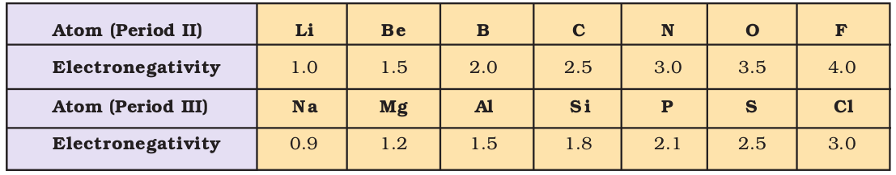
Table 3.8 (b) Electronegativity Values (on Pauling scale) Down a Family
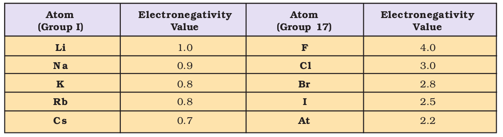
The electronegativity of any given element is not constant; it varies depending on the element to which it is bound. Though it is not a measurable quantity, it does provide a means of predicting the nature of force that holds a pair of atoms together – a relationship that you will explore later.
Electronegativity generally increases across a period from left to right (say from lithium to fluorine) and decrease down a group (say from fluorine to astatine) in the periodic table. How can these trends be explained? Can the electronegativity be related to atomic radii, which tend to decrease across each period from left to right, but increase down each group ? The attraction between the outer (or valence) electrons and the nucleus increases as the atomic radius decreases in a period. The electronegativity also increases. On the same account electronegativity values decrease with the increase in atomic radii down a group. The trend is similar to that of ionization enthalpy.
Fig. 3.7 The periodic trends of elements in the periodic table
Knowing the relationship between electronegativity and atomic radius, can you now visualise the relationship between electronegativity and non-metallic properties? Non-metallic elements have strong tendency to gain electrons. Therefore, electronegativity is directly related to that non-metallic properties of elements. It can be further extended to say that the electronegativity is inversely related to the metallic properties of elements. Thus, the increase in electronegativities across a period is accompanied by an increase in non-metallic properties (or decrease in metallic properties) of elements. Similarly, the decrease in electronegativity down a group is accompanied by a decrease in non-metallic properties (or increase in metallic properties) of elements.
All these periodic trends are summarised in figure 3.7.
3.7.2 Periodic Trends in Chemical Properties
Most of the trends in chemical properties of elements, such as diagonal relationships, inert pair effect, effects of lanthanoid contraction etc. will be dealt with along the discussion of each group in later units. In this section we shall study the periodicity of the valence state shown by elements and the anomalous properties of the second period elements (from lithium to fluorine).
(a) Periodicity of Valence or Oxidation States
The valence is the most characteristic property of the elements and can be understood in terms of their electronic configurations. The valence of representative elements is usually (though not necessarily) equal to the number of electrons in the outermost orbitals and / or equal to eight minus the number of outermost electrons as shown below.
Nowadays the term oxidation state is frequently used for valence. Consider the two oxygen containing compounds: OF2 and Na2O. The order of electronegativity of the three elements involved in these compounds is F > O > Na. Each of the atoms of fluorine, with outer electronic configuration 2s22p5, shares one electron with oxygen in the OF2 molecule. Being highest electronegative element, fluorine is given oxidation state –1. Since there are two fluorine atoms in this molecule, oxygen with outer electronic configuration 2s22p4 shares two electrons with fluorine atoms and thereby exhibits oxidation state +2. In Na2O, oxygen being more electronegative accepts two electrons, one from each of the two sodium atoms and, thus, shows oxidation state –2. On the other hand sodium with electronic configuration 3s1 loses one electron to oxygen and is given oxidation state +1. Thus, the oxidation state of an element in a particular compound can be defined as the charge acquired by its atom on the basis of electronegative consideration from other atoms in the molecule.
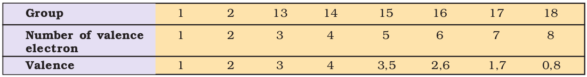
Problem 3.8
Using the Periodic Table, predict the formulas of compounds which might be formed by the following pairs of elements; (a) silicon and bromine (b) aluminium and sulphur.
Solution
(a) Silicon is group 14 element with a valence of 4; bromine belongs to the halogen family with a valence of 1. Hence the formula of the compound formed would be SiBr4.
(b) Aluminium belongs to group 13 with a valence of 3; sulphur belongs to group 16 elements with a valence of 2. Hence, the formula of the compound formed would be Al2S3.
Table 3.9 Periodic Trends in Valence of Elements as shown by the Formulas of Their Compounds
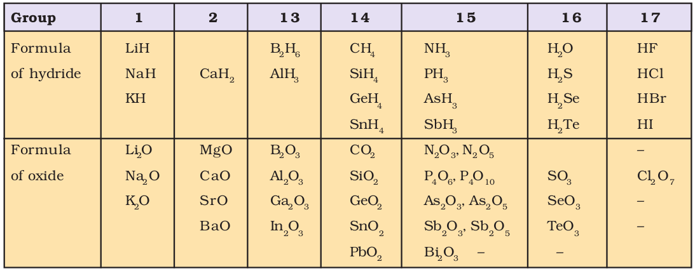
Some periodic trends observed in the valence of elements (hydrides and oxides) are shown in Table 3.9. Other such periodic trends which occur in the chemical behaviour of the elements are discussed elsewhere in this book. There are many elements which exhibit variable valence. This is particularly characteristic of transition elements and actinoids, which we shall study later.
(b) Anomalous Properties of Second Period Elements
The first element of each of the groups 1 (lithium) and 2 (beryllium) and groups 13-17 (boron to fluorine) differs in many respects from the other members of their respective group. For example, lithium unlike other alkali metals, and beryllium unlike other alkaline earth metals, form compounds with pronounced covalent character; the other members of these groups predominantly form ionic compounds. In fact the behaviour of lithium and beryllium is more similar with the second element of the following group i.e., magnesium and aluminium, respectively. This sort of similarity is commonly referred to as diagonal relationship in the periodic properties.
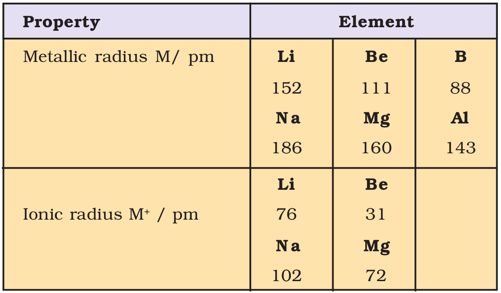
What are the reasons for the different chemical behaviour of the first member of a group of elements in the s- and p-blocks compared to that of the subsequent members in the same group? The anomalous behaviour is attributed to their small size, large charge/radius ratio and high electronegativity of the elements. In addition, the first member of group has only four valence orbitals (2s and 2p) available for bonding, whereas the second member of the groups have nine valence orbitals (3s, 3p, 3d). As a consequence of this, the maximum covalency of the first member of each group is 4 (e.g., boron can only form 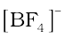, whereas the other members of the groups can expand their valence shell to accommodate more than four pairs of electrons e.g., aluminium forms 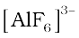). Furthermore, the first member of p-block elements displays greater ability to form pπ – pπ multiple bonds to itself (e.g., C = C, C ≡ C, N = N, N ≡ Ν) and to other second period elements (e.g., C = O, C = N, C ≡ N, N = O) compared to subsequent members of the same group.
Problem 3.9
Are the oxidation state and covalency of Al in [AlCl(H2O)5]2+ same ?
Solution
No. The oxidation state of Al is +3 and the covalency is 6.
3.7.3 Periodic Trends and Chemical Reactivity
We have observed the periodic trends in certain fundamental properties such as atomic and ionic radii, ionization enthalpy, electron gain enthalpy and valence. We know by now that the periodicity is related to electronic configuration. That is, all chemical and physical properties are a manifestation of the electronic configuration of elements. We shall now try to explore relationships between these fundamental properties of elements with their chemical reactivity.
The atomic and ionic radii, as we know, generally decrease in a period from left to right. As a consequence, the ionization enthalpies generally increase (with some exceptions as outlined in section 3.7.1(a)) and electron gain enthalpies become more negative across a period. In other words, the ionization enthalpy of the extreme left element in a period is the least and the electron gain enthalpy of the element on the extreme right is the highest negative (note : noble gases having completely filled shells have rather positive electron gain enthalpy values). This results into high chemical reactivity at the two extremes and the lowest in the centre. Thus, the maximum chemical reactivity at the extreme left (among alkali metals) is exhibited by the loss of an electron leading to the formation of a cation and at the extreme right (among halogens) shown by the gain of an electron forming an anion. This property can be related with the reducing and oxidizing behaviour of the elements which you will learn later. However, here it can be directly related to the metallic and non-metallic character of elements. Thus, the metallic character of an element, which is highest at the extremely left decreases and the non-metallic character increases while moving from left to right across the period. The chemical reactivity of an element can be best shown by its reactions with oxygen and halogens. Here, we shall consider the reaction of the elements with oxygen only. Elements on two extremes of a period easily combine with oxygen to form oxides. The normal oxide formed by the element on extreme left is the most basic (e.g., Na2O), whereas that formed by the element on extreme right is the most acidic (e.g., Cl2O7). Oxides of elements in the centre are amphoteric (e.g., Al2O3, As2O3) or neutral (e.g., CO, NO, N2O). Amphoteric oxides behave as acidic with bases and as basic with acids, whereas neutral oxides have no acidic or basic properties.
Problem 3.10
Show by a chemical reaction with water that Na2O is a basic oxide and Cl2O7 is an acidic oxide.
Solution
Na2O with water forms a strong base whereas Cl2O7 forms strong acid.
Na2O + H2O → 2NaOH
Cl2O7 + H2O → 2HClO4
Their basic or acidic nature can be qualitatively tested with litmus paper.
Among transition metals (3d series), the change in atomic radii is much smaller as compared to those of representative elements across the period. The change in atomic radii is still smaller among inner-transition metals (4f series). The ionization enthalpies are intermediate between those of s- and p-blocks. As a consequence, they are less electropositive than group 1 and 2 metals.
In a group, the increase in atomic and ionic radii with increase in atomic number generally results in a gradual decrease in ionization enthalpies and a regular decrease (with exception in some third period elements as shown in section 3.7.1(d)) in electron gain enthalpies in the case of main group elements. Thus, the metallic character increases down the group and non-metallic character decreases. This trend can be related with their reducing and oxidizing property which you will learn later. In the case of transition elements, however, a reverse trend is observed. This can be explained in terms of atomic size and ionization enthalpy.
SUMMARY
In this Unit, you have studied the development of the Periodic Law and the Periodic Table. Mendeleev’s Periodic Table was based on atomic masses. Modern Periodic Table arranges the elements in the order of their atomic numbers in seven horizontal rows (periods) and eighteen vertical columns (groups or families). Atomic numbers in a period are consecutive, whereas in a group they increase in a pattern. Elements of the same group have similar valence shell electronic configuration and, therefore, exhibit similar chemical properties. However, the elements of the same period have incrementally increasing number of electrons from left to right, and, therefore, have different valencies. Four types of elements can be recognized in the periodic table on the basis of their electronic configurations. These are s-block, p-block, d-block and f-block elements. Hydrogen with one electron in the 1s orbital occupies a unique position in the periodic table. Metals comprise more than seventy eight per cent of the known elements. Non-metals, which are located at the top of the periodic table, are less than twenty in number. Elements which lie at the border line between metals and non-metals (e.g., Si, Ge, As) are called metalloids or semi-metals. Metallic character increases with increasing atomic number in a group whereas decreases from left to right in a period. The physical and chemical properties of elements vary periodically with their atomic numbers.
Periodic trends are observed in atomic sizes, ionization enthalpies, electron gain enthalpies, electronegativity and valence. The atomic radii decrease while going from left to right in a period and increase with atomic number in a group. Ionization enthalpies generally increase across a period and decrease down a group. Electronegativity also shows a similar trend. Electron gain enthalpies, in general, become more negative across a period and less negative down a group. There is some periodicity in valence, for example, among representative elements, the valence is either equal to the number of electrons in the outermost orbitals or eight minus this number. Chemical reactivity is hightest at the two extremes of a period and is lowest in the centre. The reactivity on the left extreme of a period is because of the ease of electron loss (or low ionization enthalpy). Highly reactive elements do not occur in nature in free state; they usually occur in the combined form. Oxides formed of the elements on the left are basic and of the elements on the right are acidic in nature. Oxides of elements in the centre are amphoteric or neutral.
EXERCISES
3.1 What is the basic theme of organisation in the periodic table?
3.2 Which important property did Mendeleev use to classify the elements in his periodic table and did he stick to that?
3.3 What is the basic difference in approach between the Mendeleev’s Periodic Law and the Modern Periodic Law?
3.4 On the basis of quantum numbers, justify that the sixth period of the periodic table should have 32 elements.
3.5 In terms of period and group where would you locate the element with Z =114?
3.6 Write the atomic number of the element present in the third period and seventeenth group of the periodic table.
3.7 Which element do you think would have been named by
(i) Lawrence Berkeley Laboratory
(ii) Seaborg’s group?
3.8 Why do elements in the same group have similar physical and chemical properties?
3.9 What does atomic radius and ionic radius really mean to you?
3.10 How do atomic radius vary in a period and in a group? How do you explain the variation?
3.11 What do you understand by isoelectronic species? Name a species that will be isoelectronic with each of the following atoms or ions.
(i) F– (ii) Ar (iii) Mg2+ (iv) Rb+
3.12 Consider the following species :
N3–, O2–, F–, Na+, Mg2+ and Al3+
(a) What is common in them?
(b) Arrange them in the order of increasing ionic radii.
3.13 Explain why cation are smaller and anions larger in radii than their parent atoms?
3.14 What is the significance of the terms — ‘isolated gaseous atom’ and ‘ground state’ while defining the ionization enthalpy and electron gain enthalpy?
Hint : Requirements for comparison purposes.
3.15 Energy of an electron in the ground state of the hydrogen atom is –2.18×10–18J. Calculate the ionization enthalpy of atomic hydrogen in terms of
J mol–1.
Hint: Apply the idea of mole concept to derive the answer.
3.16 Among the second period elements the actual ionization enthalpies are in the order Li < B < Be < C < O < N < F < Ne.
Explain why
(i) Be has higher ∆i H than B
(ii) O has lower ∆i H than N and F?
3.17 How would you explain the fact that the first ionization enthalpy of sodium is lower than that of magnesium but its second ionization enthalpy is higher than that of magnesium?
3.18 What are the various factors due to which the ionization enthalpy of the main group elements tends to decrease down a group?
3.19 The first ionization enthalpy values (in kJ mol–1) of group 13 elements are :
| B | Al | Ga | In | Tl |
| 801 | 577 | 579 | 558 | 589 |
How would you explain this deviation from the general trend ?
3.20 Which of the following pairs of elements would have a more negative electron gain enthalpy?
(i) O or F (ii) F or Cl
3.21 Would you expect the second electron gain enthalpy of O as positive, more negative or less negative than the first? Justify your answer.
3.22 What is the basic difference between the terms electron gain enthalpy and electronegativity?
3.23 How would you react to the statement that the electronegativity of N on Pauling scale is 3.0 in all the nitrogen compounds?
3.24 Describe the theory associated with the radius of an atom as it
(a) gains an electron
(b) loses an electron
3.25 Would you expect the first ionization enthalpies for two isotopes of the same element to be the same or different? Justify your answer.
3.26 What are the major differences between metals and non-metals?
3.27 Use the periodic table to answer the following questions.
(a) Identify an element with five electrons in the outer subshell.
(b) Identify an element that would tend to lose two electrons.
(c) Identify an element that would tend to gain two electrons.
(d) Identify the group having metal, non-metal, liquid as well as gas at the room temperature.
3.28 The increasing order of reactivity among group 1 elements is Li < Na < K < Rb <Cs whereas that among group 17 elements is F > CI > Br > I. Explain.
3.29 Write the general outer electronic configuration of s-, p-, d- and f- block elements.
3.30 Assign the position of the element having outer electronic configuration
(i) ns2np4 for n=3 (ii) (n-1)d2ns2 for n=4, and (iii) (n-2) f 7 (n-1)d1ns2 for n=6, in the periodic table.
3.31 The first (∆iH1) and the second (∆iH2) ionization enthalpies (in kJ mol–1) and the (∆egH) electron gain enthalpy (in kJ mol–1) of a few elements are given below:
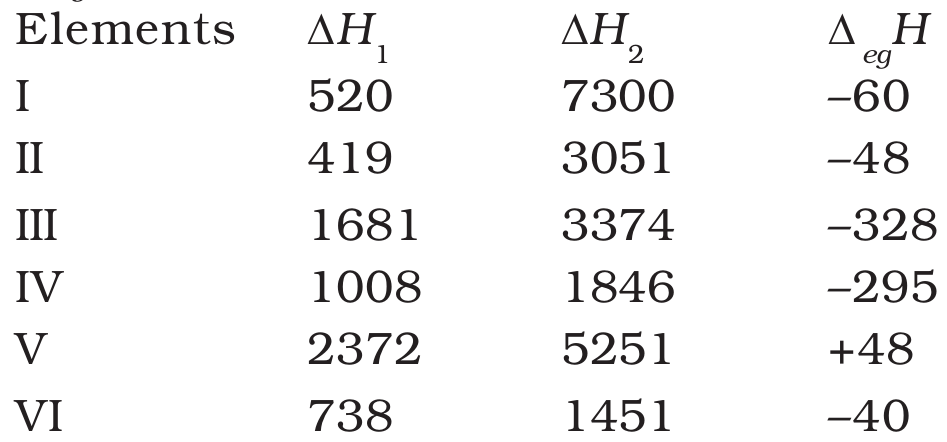
Which of the above elements is likely to be :
(a) the least reactive element.
(b) the most reactive metal.
(c) the most reactive non-metal.
(d) the least reactive non-metal.
(e) the metal which can form a stable binary halide of the formula MX2(X=halogen).
(f) the metal which can form a predominantly stable covalent halide of the formula MX (X=halogen)?
3.32 Predict the formulas of the stable binary compounds that would be formed by the combination of the following pairs of elements.
(a) Lithium and oxygen (b) Magnesium and nitrogen
(c) Aluminium and iodine (d) Silicon and oxygen
(e) Phosphorus and fluorine (f) Element 71 and fluorine
3.33 In the modern periodic table, the period indicates the value of :
(a) atomic number
(b) atomic mass
(c) principal quantum number
(d) azimuthal quantum number.
3.34 Which of the following statements related to the modern periodic table is incorrect?
(a) The p-block has 6 columns, because a maximum of 6 electrons can occupy all the orbitals in a p-shell.
(b) The d-block has 8 columns, because a maximum of 8 electrons can occupy all the orbitals in a d-subshell.
(c) Each block contains a number of columns equal to the number of electrons that can occupy that subshell.
(d) The block indicates value of azimuthal quantum number (l) for the last subshell that received electrons in building up the electronic configuration.
3.35 Anything that influences the valence electrons will affect the chemistry of the element. Which one of the following factors does not affect the valence shell?
(a) Valence principal quantum number (n)
(b) Nuclear charge (Z)
(c) Nuclear mass
(d) Number of core electrons.
3.36 The size of isoelectronic species — F–, Ne and Na+ is affected by
(a) nuclear charge (Z)
(b) valence principal quantum number (n)
(c) electron-electron interaction in the outer orbitals
(d) none of the factors because their size is the same.
3.37 Which one of the following statements is incorrect in relation to ionization enthalpy?
(a) Ionization enthalpy increases for each successive electron.
(b) The greatest increase in ionization enthalpy is experienced on removal of electron from core noble gas configuration.
(c) End of valence electrons is marked by a big jump in ionization enthalpy.
(d) Removal of electron from orbitals bearing lower n value is easier than from orbital having higher n value.
3.38 Considering the elements B, Al, Mg, and K, the correct order of their metallic character is :
(a) B > Al > Mg > K (b) Al > Mg > B > K
(c) Mg > Al > K > B (d) K > Mg > Al > B
3.39 Considering the elements B, C, N, F, and Si, the correct order of their non-metallic character is :
(a) B > C > Si > N > F (b) Si > C > B > N > F
(c) F > N > C > B > Si (d) F > N > C > Si > B
3.40 Considering the elements F, Cl, O and N, the correct order of their chemical reactivity in terms of oxidizing property is :
(a) F > Cl > O > N (b) F > O > Cl > N
(c) Cl > F > O > N (d) O > F > N > Cl